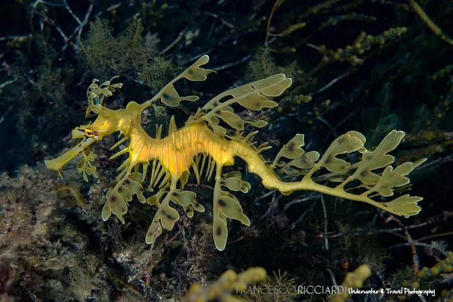

鱼类 · 动物界
叶海龙 Phycodurus eques

全身长满叶状附肢的海龙，外形像漂浮的海藻，仅分布于澳大利亚南部，是当地受保护的海洋标志物种。
- 分类
- 门脊索动物门纲辐鳍鱼纲目海龙目科海龙科属叶海龙属
- 栖息环境
- 澳大利亚南部温带沿海的海草床、海藻林和岩礁区
- 地理分布
- 澳大利亚南部沿海，从西澳大利亚到维多利亚州
- 保护级别
- IUCN 无危（LC）；澳大利亚列为受保护海洋鱼类，禁止出口
物种志
叶海龙的身体覆盖着许多叶状附肢，像一片片漂浮的海藻，是自然界最精巧的伪装之一。它的身体细长，吻部管状，没有牙齿，靠吸食小型甲壳类为生。体色多为黄褐、橄榄绿或红褐色，随栖息环境略有变化。成体体长一般 20–30 cm，最大可达 35 cm。
叶海龙仅分布于澳大利亚南部的温带沿海，从西澳大利亚到维多利亚州，栖息在海草床、海藻林和岩礁区。它游泳能力弱，常随水流漂浮，靠伪装躲避捕食者。繁殖时雌鱼把卵产在雄鱼尾部下方的育儿区，由雄鱼携带孵化。叶海龙对栖息地变化敏感，海草床退化和非法采集对其造成威胁。目前 IUCN 评估为无危，但澳大利亚将其列为受保护海洋鱼类，禁止出口。
形态与习性
- 食性小型甲壳类，靠管状吻部吸食
- 体长一般 20–30 cm，最大可达 35 cm
- 伪装全身叶状附肢，形似漂浮海藻
- 繁殖雌鱼产卵于雄鱼尾部育儿区，由雄鱼孵化
- 分布仅分布于澳大利亚南部温带沿海
- 保护澳大利亚禁止出口，非法采集受处罚
趣味知识
- 叶海龙的叶状附肢不是真正的叶片，而是皮肤突起。
- 它几乎没有牙齿，靠管状吻部像吸管一样吸食小虾。
- 叶海龙是南澳大利亚的海洋象征，出现在当地徽章上。